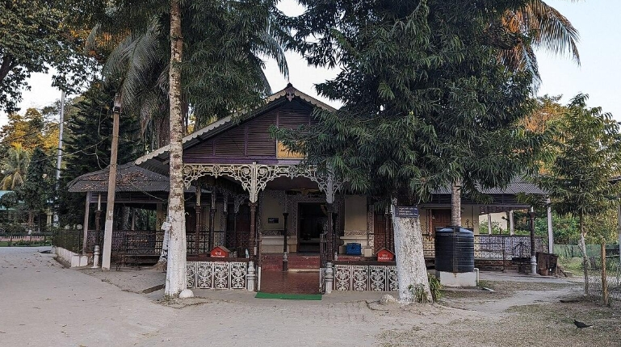
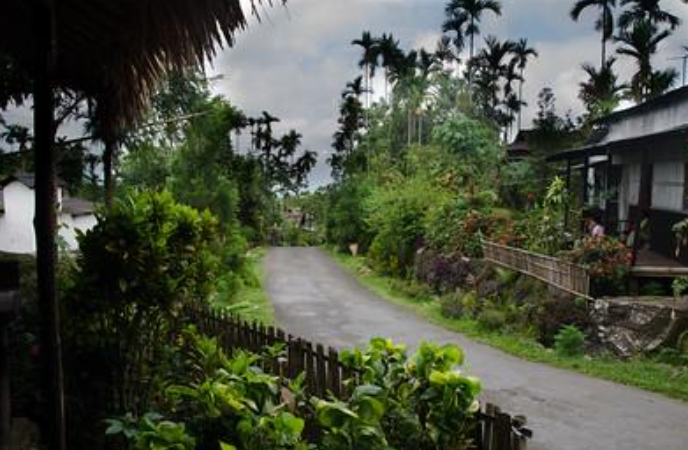
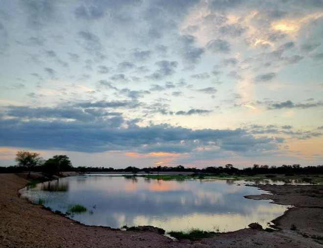
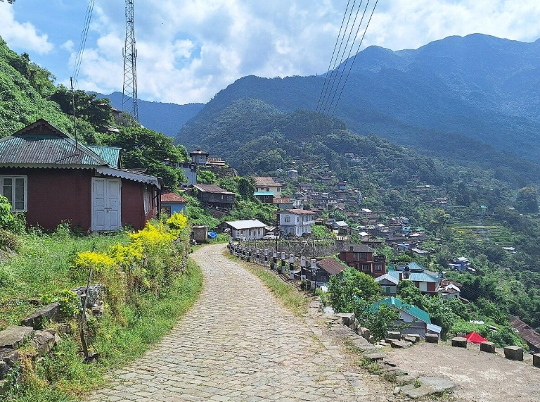
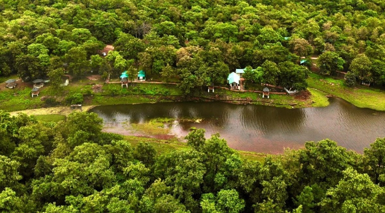

In today's time when cities struggle to breathe, small villages preserve the rhythms of nature. Once thought to be outdated, their way of life is now the model for a sustainable future. In villages, life does not move ahead of nature, but moves along with it.
Everything in villages is valued, the food here is not brought in plastic packets , instead grown with care. Forests are not meant to be exploited but to be preserved. People do not live in isolation, they live in community, and every decision is shaped by responsibility towards the land that feeds them.
Today, as cities struggle with severe pollution, climate stress, and the race for development, villages show another way of living that is rooted in respect and sustainability. In this blog we will look into how small villages contribute to India’s eco future.
Lessons the Villages Have Known Forever
Even when the word sustainability existed, the villages of India were already living by the principles that protect the land. They did not learn this from books, but grew from observation, experience and connection with nature.
In many villages people have align their lives with nature's cycle, they wake up with sunrise and rest with the moon. Most of the festivals celebrated show gratitude towards the nature.
Houses are built from mud, bamboo, and stone, which keep them warm in winters and cool in summers. Cooking relies on minimal fuel. The idea of waste hardly exists in villages. Everything is mostly reused or returned to the Earth. At this point, when the world is searching for climate solutions, villages show that the answers have existed all along with us.
In Majuli, Assam houses are made using bamboo and mud on raised concrete stilts this helps to reduce carbon footprint and flood damage. Plastic bans, regular clean-up drives, and an eco-conscious community mindset has embraced a truly carbon-neutral way of life in Majuli.
 Source: “A bamboo bridge on Luhit river, Majuli, Assam” by Joli Rumi is licensed under CC BY-SA
4.0.
Source: “A bamboo bridge on Luhit river, Majuli, Assam” by Joli Rumi is licensed under CC BY-SA
4.0.
 Source: “A view inside the Auniati Satra, Majuli, Assam” by Joli Rumi is licensed under CC BY-SA 4.0.
Mawlynnong village of Meghalaya holds the title of ‘Asia’s Cleanest Village,’ it promotes a plastic-free lifestyle and encourages residents to take part in eco-friendly practices.
 Source: “Mawllynong” by Ashwin Kumar is licensed under CC BY-SA 2.0.Traditions That Turn Simplicity Into Sustainability
One of the most powerful lessons villages offer is living with less. In villages, consumption is not done by trends but by necessity and respect for resources. They live low-carbon lifestyles. The concept of circular economy, which is being discussed today in global sustainability talks has been practiced in the villages for ages.
Water has always been more than a resource in Indian villages, it is a lifeline and often a shared responsibility. Even before formal water management systems were introduced, villages were already practicing them.
In many parts of Rajasthan, rainfall is scarce, so the villagers built kunds, baoris, and johads to collect rainwater that can be used for months. In the villages of Uttarakhand and Himachal, people rely on naulas and dharas, for freshwater. These systems remind us that water belongs to community, not to individuals.
 Source: “A Nadi (small johad) in village Laporiya, Rajasthan” by Amar singh kangarot is licensed under CC BY-SA 4.0.In many parts of the country, communities maintain sacred groves, which are patches of forests that are never cut or disturbed because they are believed to be homes of deities or ancestral spirits. These groves become home to rare plants, medicinal herbs, and wildlife. What we call 'conservation zones' today, are places of faith in villages.
In the Himalayan region there is Van Panchayat, where local people collectively manage forest areas, prevent over cutting and make sure that the forest regenerates naturally. This helps in maintaining a balance, as people take only what they need while giving nature time to heal.
In Khanoma, Nagaland villagers have declared 20 sq. km of forest land as a nature sanctuary and banned logging and hunting to protect biodiversity. Jhum farming is practiced which enriches the soil, Khonoma’s people shows that mindful living and shared responsibility can nurture both land and life.
 Source: https://share.google/toXnF2H8uIrgMmelAThe strength of villages lies in community. Life here is not lived in isolation, every action is guided by mutual support and shared responsibility, and collective care for the environment.
Tools, resources, and labour are shared freely. People come together to plant crops or clean water. Even festivals, rituals and celebrations are organised collectively most of which are devoted to nature.
Rise of Rural Green Entrepreneurship
Beyond tradition, Indian villages are becoming hubs of innovation by blending old practices with modern ideas to create eco - friendly livelihoods. They are proving that economic growth and sustainability can go hand in hand.
Women led self help groups ( SHGs) are producing handmade and natural products like organic soaps , herbal remedies which are not only generating income but also preserving local craft traditions.
Similar to this, farmers are producing millet- based products, which are not only climate resilient but also highly nutritious. In some villages, there is the concept of eco tourism, where villagers give chance to outsiders to experience sustainable living, stay in mud houses and try organic farming. This not only helps in promoting environmental awareness but also helps the community financially.
In Gujarat, the government has taken steps to promote sustainable villages. The aim is to integrate advanced technology and infrastructure to improve the quality of life in rural areas. Dhaj, near Surat is now India's first eco-village which uses solar panels, biogas plants, rainwater harvesting systems and water efficient farming techniques.
 Source: https://share.google/mOI3eAJNEYebX9OECThese efforts highlight the future of green innovations, where creativity, community and care for nature go hand - in - hand.
Conclusion : What Urban India Can Learn from Villages
One of the most important lessons that can be learned from the people living in villages is mindful consumption. Take only what you need, reuse resources, and try to generate minimal waste. There are NGOs continously working to protect our nature. Among them, Him Village E-Prahari aims to build zero-waste villages, encouraging communities to reduce waste and protect their natural surroundings. For more details, feel free to visit the platform.
The noteworthy concept is community and shared responsibility. In villages mostly the decisions are made collectively and joint efforts in farming and water management create strong social bonds while conserving resources.
Another important lesson which villages teach us is to live with nature. Respecting seasons, protecting forests, conserving water in daily life. If urban India follows these habits, it can transform our cities into greener, more sustainable, and liveable spaces.
In my opinion, the answers we try to find in global climate debates, exists in the simple lifestyles of our rural communities. Currently, cities struggle with pollution, waste, and climate stress, the lessons from villages feel more relevant than ever. By learning from the villages that have long nurtured the earth, we can ensure that development and sustainability walk hand in hand for generations to come.